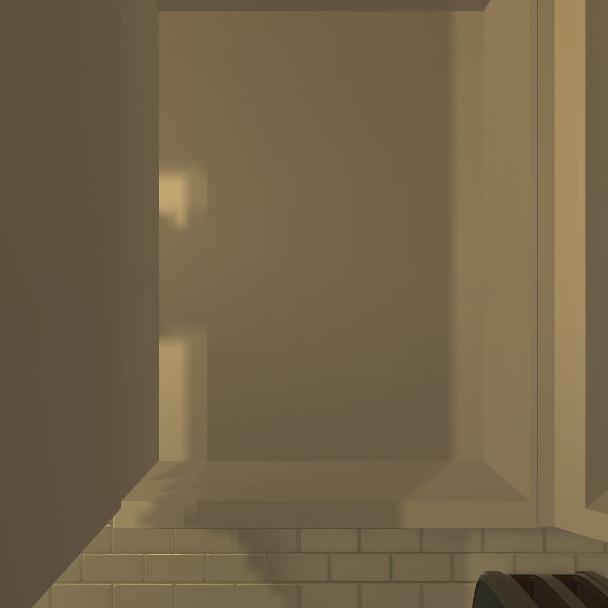
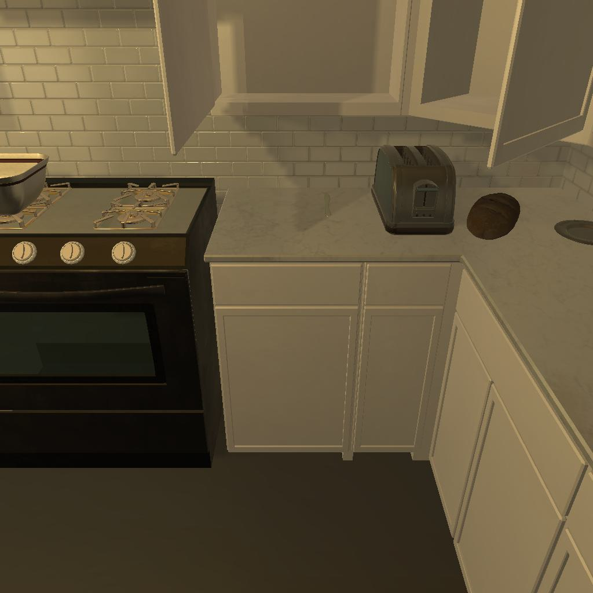

---------------------------------------------------------task: 29---------------------------------------------------------
--------------------------------------------------------------------------------------------------------------------------------------------------------------------
--------------------------------------------------------------------------------------------------------------------------------------------------------------------
Step:--------------------------------------------------------------------------17-------------------------------------------------------------------------------
----------------------------------------
VLM Prompt:
Image1:
Image2:
**Instruction**
1. Analyze the provided images to identify all visible household objects and compare the difference between images (e.h. whether the object is opened or not and taken on hand or not), focusing on those relevant to the task description "find two tomato and put them in countertop."
2. Use the analysis of images and the task hint "The agent must find an object of the desired type, pick it up, find the correct location to place it, put it down there, then look for another object of the desired type, pick it up, return to previous location, and put it down there with the other object." to answer the question: what is the most reasonable action in the choices for the task description "find two tomato and put them in countertop"?
3. Decide and write the answer using the template: The answer is: (i): , where i is the real number. If there is no desired object in images, search every place based on **Initial Observation** to find the object. And if no one is exactly correct, choose a similar answer.
**Initial Observation**
You are in the middle of a room. Looking quickly around you, you can see cabinet (1-20), toaster (1), microwave (1), garbagecan (1), countertop (1-2), drawer (1-4), stoveburner (1-4), sinkbasin (1), sink (1), fridge (1), diningtable (1), coffeemachine (1)
**Answer Choices**
(1): go to cabinet 3
(2): go to toaster 1
(3): go to cabinet 4
(4): go to cabinet 5
(5): go to microwave 1
(6): go to garbagecan 1
(7): go to countertop 1
(8): go to drawer 1
(9): go to cabinet 6
(10): go to cabinet 7
(11): go to drawer 2
(12): go to stoveburner 1
(13): go to stoveburner 2
(14): go to countertop 2
(15): go to cabinet 8
(16): go to cabinet 9
(17): go to cabinet 10
(18): go to drawer 3
(19): go to drawer 4
(20): go to stoveburner 3
(21): go to stoveburner 4
(22): go to cabinet 11
(23): go to cabinet 12
(24): go to cabinet 13
(25): go to cabinet 14
(26): go to sinkbasin 1
(27): go to sink 1
(28): go to cabinet 15
(29): go to fridge 1
(30): go to cabinet 16
(31): go to cabinet 17
(32): go to cabinet 18
(33): go to cabinet 19
(34): go to diningtable 1
(35): go to coffeemachine 1
(36): go to cabinet 20
(37): open cabinet 2
(38): close cabinet 2
(39): take pot 1 from cabinet 2
(40): take bread 1 from cabinet 2
(41): take plate 1 from cabinet 2
(42): take stoveknob 1 from cabinet 2
(43): take stoveknob 2 from cabinet 2
(44): take stoveknob 3 from cabinet 2
(45): take butterknife 2 from cabinet 2
(46): examine cabinet 2
**Answer**
Let's think step by step by following the instructions.
----------------------------------------
----------------------------------------
Original Response:
Image Analysis:
- In Image 1, we see a partially open cabinet with nothing inside visible to us.
- In Image 2, we see a countertop with various kitchen items such as a toaster, a pot, and some food items, but no tomatoes are visible.
Task Hint Analysis:
The task requires the agent to find two tomatoes and place them on the countertop. The agent must search for the tomatoes, pick them up, and place them in the correct location.
Based on the initial observation, we can assume that the tomatoes might be inside cabinets or the fridge, as they are typically stored in these locations in a kitchen. Since no tomatoes are visible on the countertops or open cabinets in the images, we can rule out countertop 1, countertop 2, and the visible open cabinet as locations to search. The cabinets and fridge are the most likely places to search for tomatoes.
Decision:
Given the information and task description, the most reasonable action to find two tomatoes would be to search the cabinets and fridge first. Since the answer choices do not include opening or searching the fridge, we will focus on the cabinets.
The answer is: (29): go to fridge 1, where we can search for the tomatoes. If the tomatoes are not in the fridge, the next reasonable action would be to search the cabinets systematically, starting with the ones closest to the countertops.
----------------------------------------
----------------------------------------
>>> Refine Original VLM Response and Get Pure Action: go to fridge 1, where we can search for the tomatoes
----------------------------------------
-----------------------------------------------------------------
Running time: 10.59169340133667 seconds
Total Money: 15.424300000000004
-----------------------------------------------------------------
-----------------------------------------------------------------
Text Observation:Nothing happens.
-----------------------------------------------------------------
UNSUCCEED